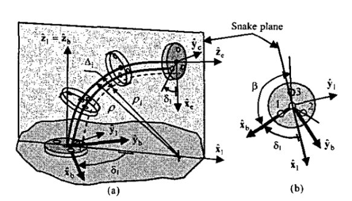

I spent the summer after my junior year at Vanderbilt University's laboratory for Advanced Robotics and Mechanism Applications. Under the grad students' guidance, I had the opportunity to learn about continuum robotics and simulated their motion and kinematics in MATLAB. This project was based on lab director Dr. Nabil Simaan’s 2004 ICRA paper, “A Dexterous System for Laryngeal Surgery.”

The snake-like unit consists of a rigid base disk, a rigid end disk, several equally-spaced spacer disks, and flexible backbones running through them. There is a primary backbone fixed to every disk which defines the segment length. The outer tubes are the secondary backbones, attached only at the end disk and free to slide through the spacer disks. Actuating a secondary backbone by pushing or pulling it changes its arc length relative to the primary backbone, which bends the entire segment.
The spacer disks constrain all backbones to remain equidistant, and the primary backbone is assumed to bend as a circular arc. The end-effector position and segment shape can then be fully determined by just two numbers: a bending angle and a plane angle. This is what makes continuum robots analytically tractable despite having infinite mechanical degrees of freedom.